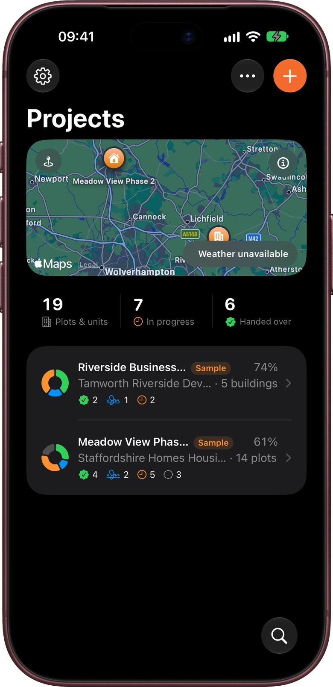
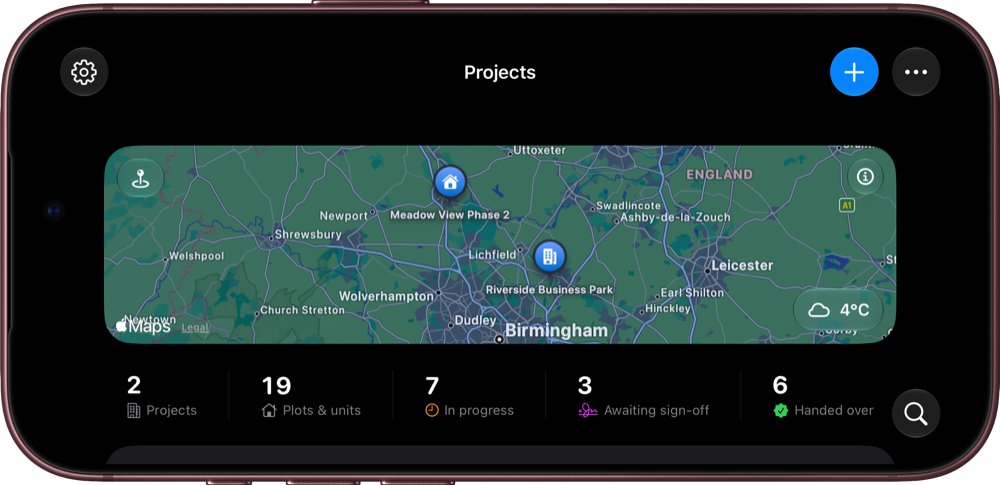
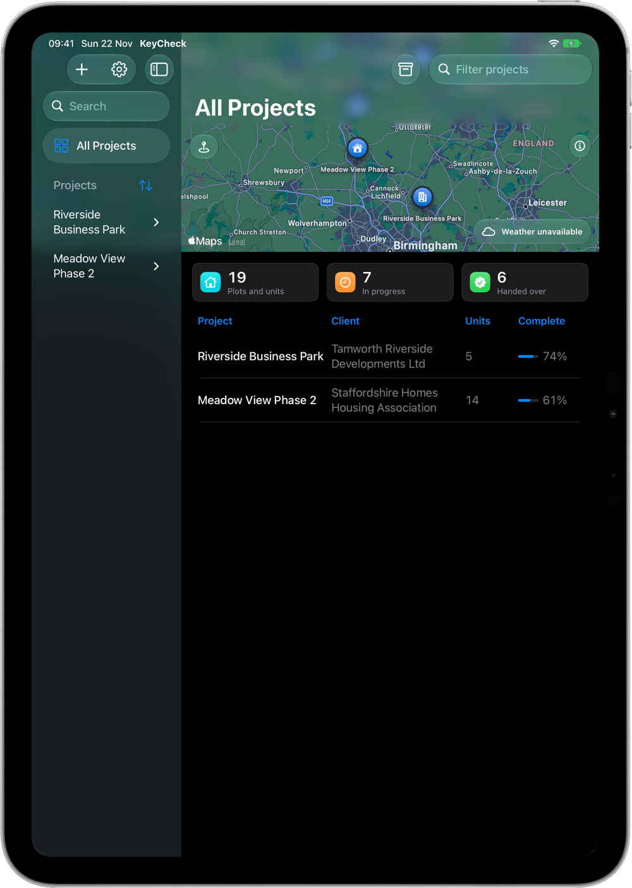
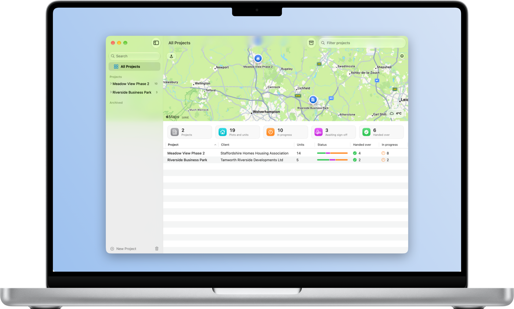
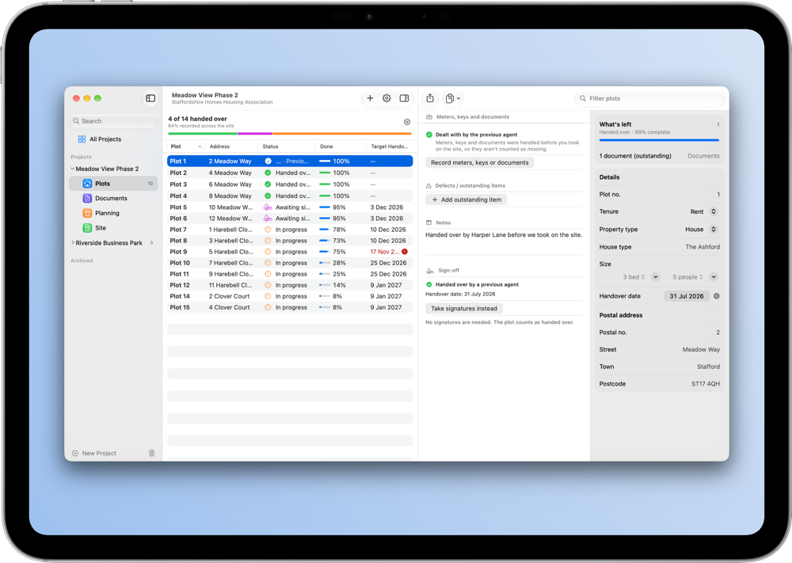
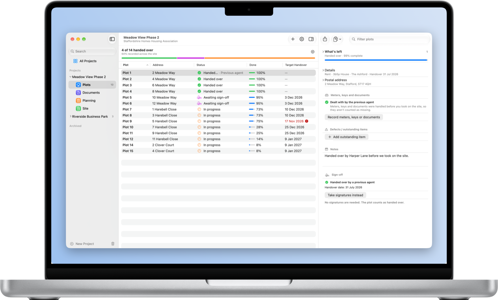
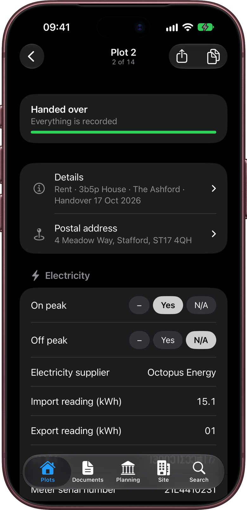
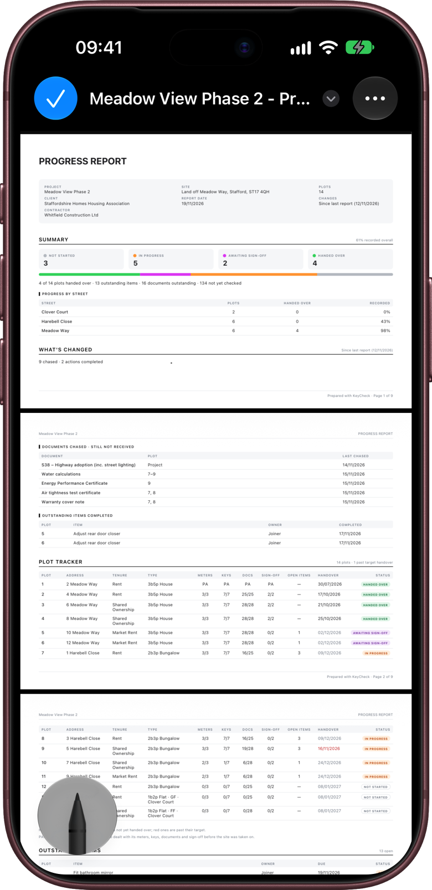

KeyCheck keeps track of everything needed to hand over new homes and commercial buildings.
On site, it records the keys, meter readings, any outstanding final snags and signatures for each plot. In the office, it tracks the paperwork that has to be in place before a plot can be handed over: certificates, warranties and planning conditions, with dates showing when each one was asked for, chased and received to provide a full audit trail.
It turns all of this into PDFs: a handover form for each plot, and a progress report for meetings and clients.
KeyCheck runs on iPhone, iPad and Mac.
KeyCheck records the final snags still open at handover, not a complete snagging inspection. For detailed snag lists with photos, drawings and reports, use Snaglite, our snagging app.
Who it's for
KeyCheck is for everyone involved in getting plots ready to hand over, whether on site or in the office:
- Site managers and handover staff walk each plot with the app, counting keys, scanning meters, listing any final snags and collecting signatures.
- Employer's agents, contract administrators and purchasing agents track documents and conditions across the whole site. Much of this happens away from site, chasing paperwork and preparing for progress meetings.
- Clients, housing associations and building owners usually see KeyCheck through its PDFs: the handover forms they receive and the progress reports tabled at meetings.
The manual is written for all of these readers. Chapters about using the app on site and in the office are labelled, and the chapters on reports explain what each part of a PDF means for anyone receiving one.
How KeyCheck is organised
Projects
A project is one site or development, such as "Meadow View Phase 2". The Projects screen lists all of your projects, with a coloured bar showing how far along each one is. Tap a project to open it. The ••• button at the top right has Sort by, Export projects… and Recently Deleted. A deleted project stays in Recently Deleted for 30 days, so you can restore it if you change your mind.




Inside a project
An open project fills the screen, with a tab bar at the bottom:
| Tab | What's on it |
|---|---|
| Plots (or Units, Buildings and so on, after the project's unit name) | The list of plots, with a summary of how many are handed over |
| Documents | The project's site-wide documents, and its attachments |
| Planning | Planning decisions, conditions and S106 obligations |
| Site | Insights, Needs attention, site details and the project log; communal keys and meters; reports and spreadsheets; and sharing |
| Search (magnifying glass) | Searches everything in the project |
To go back to the Projects screen, tap Projects at the top left, or swipe right from the left edge of the screen. KeyCheck always opens on the Projects screen.
On the Mac, and on iPad in a wide window (such as full screen), your projects are in a sidebar down the left, with All Projects at the top for an overview of every site. A narrower iPad window, such as Split View or Slide Over, uses the iPhone layout described above, and so does an iPad set to one of the largest text sizes. Choose a project, then its Plots (or the project's own unit name, such as Buildings), Documents, Planning or Site beneath it in the sidebar, or press ⌘1 to ⌘4; ⌘0 goes back to All Projects. To work on two projects side by side, right-click one and choose Open in New Window, or press ⌥⌘O. To search every project, choose Edit → Search All Projects… (⇧⌘F); ⌘F filters the list you're looking at. View → Show or Hide Inspector (⌥⌘I) opens a panel down the right with more about whatever you've selected, and View → Sort Projects By changes the order of the sidebar. With Handoff, a plot you have open on one device can be picked up on another, and opens at the same plot. This manual describes the iPhone; on the Mac, click where it says tap, and right-click where it says touch and hold.



Plots
Each project is divided into the things you hand over one at a time. On a housing site these are usually plots, but a project can use flats, units, buildings or blocks instead. This manual says "plot" throughout, but everything works the same whichever name your project uses.
Each plot has its own handover form, with sections for:
- Details: property type, house type, tenure (for example Rent or Shared Ownership) and postal address
- Keys: how many of each key are handed over
- Meters: electricity, gas and water readings and serial numbers, with photos
- Documents: the instructions and certificates for that plot, such as the gas safety certificate and EPC
- Defects / outstanding items: snags still to be fixed
- Sign-off: signatures from the client and contractor
- Notes: anything else

Records for the whole project
Some things belong to the whole site rather than one plot. These have their own place in the project, on the Documents, Planning and Site tabs:
| Record | What it holds |
|---|---|
| Project documents | Site-wide paperwork, such as the fire strategy and warranties |
| Planning | Planning decisions, conditions and S106 obligations |
| Communal keys | Keys and fobs for bin stores, cycle stores, plant rooms and communal doors |
| Communal meters | Meters serving the whole block, such as a landlord supply or solar panels |
| Site details | Contacts, site hours, access, parking and the contract |
| Project log | Dated notes of site visits, issues, decisions and chases |
| Attachments | Site plans, letters, photos and scanned documents for reference |
The form
Every site is different, so the list of keys, meters, documents and sign-off roles can be changed for each project. This list is called Form items. You can also hide items for a particular tenure, for example a document that doesn't apply to Shared Ownership plots. Chapter 3 explains how.
Tracking essential paperwork
A plot often can't be handed over until its paperwork is complete, and waiting for documents is often what holds a handover up. KeyCheck tracks the paperwork so you can see what's missing and how long you've been waiting.
Each document is marked as one of these:
- Received: you have it.
- Outstanding: you've asked for it and are waiting.
- Not checked: nobody has looked at it yet.
- Not applicable: it doesn't apply to this plot.
KeyCheck saves the date every time a document's status changes. So without any extra typing, you can see that a certificate has been "Waiting 12 days · chased yesterday", or prove when it arrived.
This works for:
- Plot documents, which each plot needs its own copy of, such as EPCs, gas safety certificates and electrical certificates
- Project documents, which the site needs once, such as the fire strategy or warranties
- Bundles, for requirements made up of several separate items, such as a set of collateral warranties
- Planning conditions, which KeyCheck can read from a council's decision notice and sort into conditions needed before work starts, before occupation, or ongoing
Documents can be updated one plot at a time on site, or for many plots at once from the office. For example, if the EPCs for plots 12 to 20 arrive in one email, you can mark them all as received in one go. Chapter 6 covers document tracking in detail.
Needs attention, on the Site tab, lists what to act on: documents nobody has chased for a while, final snags that are overdue, and plots past or near their target handover date. KeyCheck can remind you with a notification, and there's a Needs attention widget for the Home Screen and Lock Screen. Chapter 9 explains more.
Reports
KeyCheck makes two main kinds of PDF:
- Handover forms: one per plot, recording what was handed over, the meter readings, the documents and the signatures. These are for the client's and residents' records.
- The progress report: a summary of the site for progress meetings. It shows what's changed since the last report, every document still missing with how long it's been outstanding, the project log, and notes on each plot.
KeyCheck can also export the plots, meters, documents and final snags as spreadsheets (CSV files) that open in Excel or Numbers.
You can email PDFs, save them to Files, AirDrop them or print them. Chapters 10 and 11 explain what each part of the PDFs means.

To see what they look like, open the sample handover pack (every plot's handover form for Meadow View Phase 2) or the sample progress report. Both are PDFs made from the sample project.
Working with a team
With iCloud sync turned on, your projects stay up to date across your iPhone, iPad and Mac. You can also share a project with colleagues, so the site team and the office see each other's changes as they happen. For example, the site manager can tick off a snag on site, and the employer's agent sees it in the office.
You can also ask Siri, or use the Shortcuts app, to open a project or plot, add to the project log, or find out what's left on a plot, and your projects and plots show up when you search on your iPhone. Chapter 9 explains more.
iCloud sync is off until you turn it on. Your projects, photos and signatures are stored on your device and in your own iCloud. KeyCheck doesn't send them anywhere else. Chapter 12 explains syncing and sharing.
KeyCheck Pro
Creating projects and making changes needs a KeyCheck Pro subscription, which starts with a 7-day free trial. Without a subscription, the subscription screen appears when you open KeyCheck, but you can close it. You can still open, read and export everything, and a View only notice appears at the top of each project.
This also applies to shared projects. Anyone you share a project with can open and export it for free. To make changes, they need their own KeyCheck Pro subscription, and you need to have given them permission to make changes. Chapter 2 explains how to subscribe.
Try it with the sample projects
The first time you open KeyCheck, it adds two example sites:
- Meadow View Phase 2: a housing site with plots at every stage, from not started to handed over and signed
- Riverside Business Park: a commercial site, using buildings instead of plots
They're the easiest way to get a feel for the app, and you can change anything in them without affecting your own projects. Chapter 2 explains more.